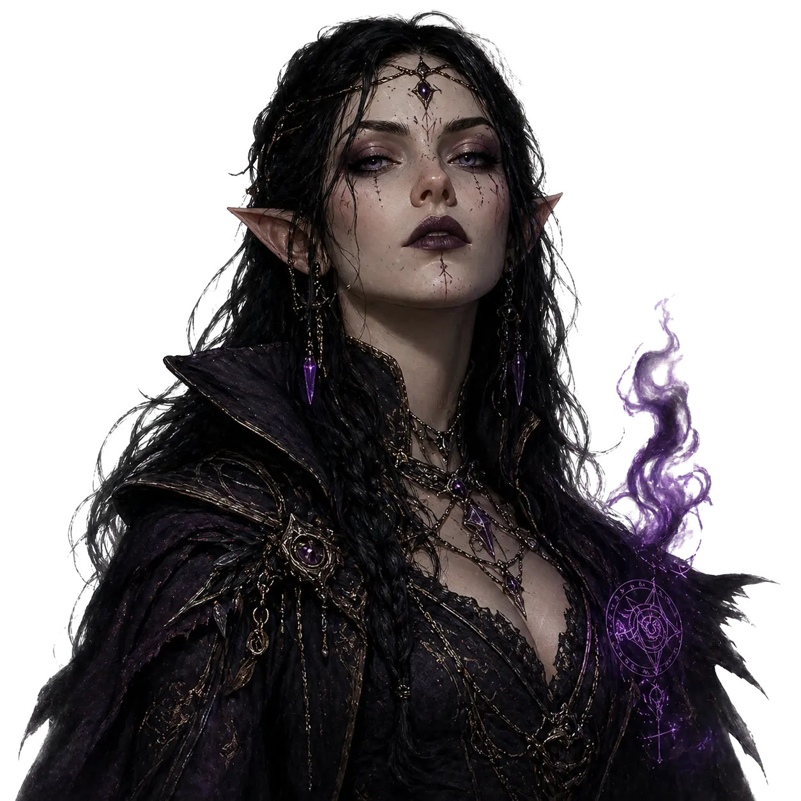
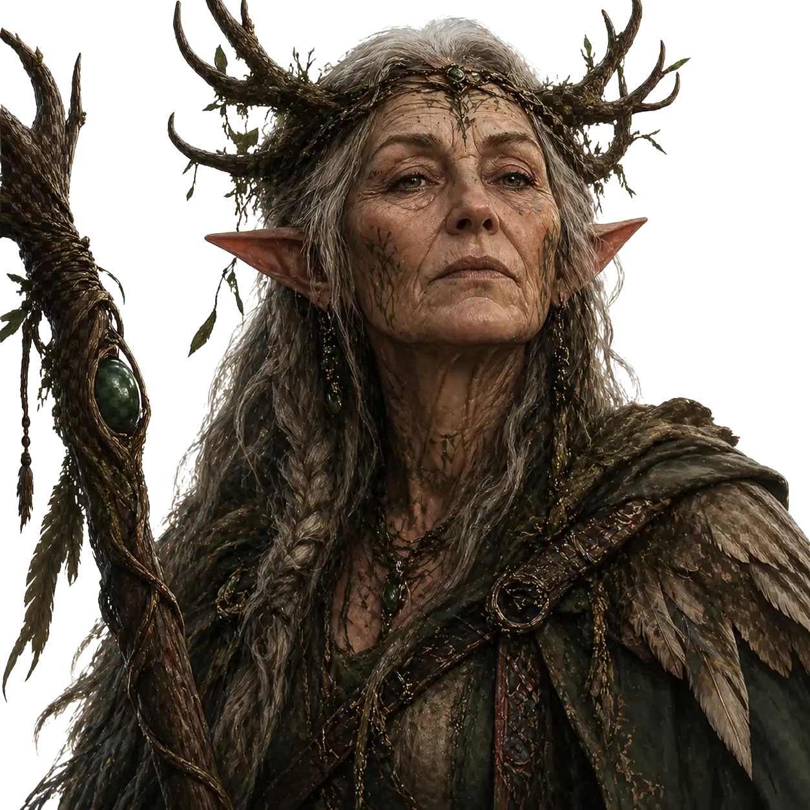

BARBARO
Ver Mais
Estilo de Jogo: Absorver quantidades massivas de dano e desferir ataques corpo a corpo devastadores.
Estilo de Jogo: Absorver quantidades massivas de dano e desferir ataques corpo a corpo devastadores.
Estilo de Jogo: Inspirar aliados, curar, usar magias de controle e ser bom em praticamente qualquer perícia.

Estilo de Jogo: Ataques mágicos constantes a distância, invocações customizáveis e truques de utilidade.
Estilo de Jogo: Curandeiro essencial, suporte robusto e conjurador de magias sagradas na linha de frente.

Estilo de Jogo: Transformar-se em animais para combate/exploração e controlar o campo com magia da natureza.
Estilo de Jogo: Disparar magias destrutivas e usar Metamagia para alterar como os feitiços funcionam.
Estilo de Jogo: Desferir múltiplos ataques por turno, mestre em armaduras e o pilar físico do grupo.
Estilo de Jogo: Causar dano massivo com Ataque Furtivo, abrir fechaduras e evitar perigos com agilidade.
Estilo de Jogo: A maior variedade de magias do jogo, focado em utilidade, controle de grupo e destruição em área.
Estilo de Jogo: A maior variedade de magias do jogo, focado em utilidade, controle de grupo e destruição em área.
Estilo de Jogo: Defensor pesado de alta resistência, capaz de curar aliados e causar dano massivo com o Destruição Divina.

Estilo de Jogo: Combate à distância ou com duas armas, magias de utilidade na natureza e bônus contra inimigos favoritos.